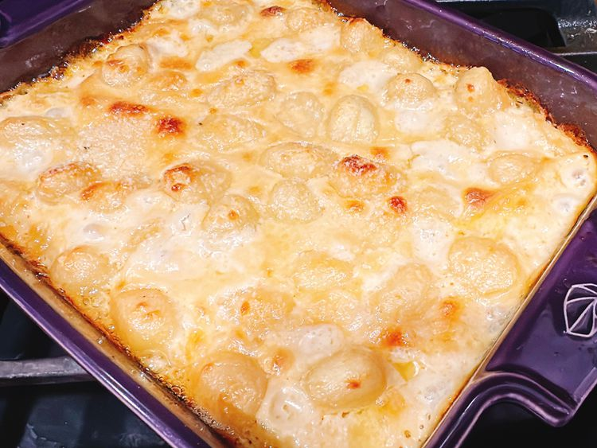

Alfredo Gnocchi Bake

Recipe Information
- Prep Time: 10 minutes
- Cook Time: 30 minutes
- Total Time: 40 minutes
- Servings: 5
Ingredients
- 1 tablespoon butter
- 3 cloves garlic, minced
- 1 cup evaporated milk
- 1/4 cup heavy cream
- 1 cup freshly shaved Parmesan cheese
- 18 ounces of refrigerated gnocchi
- 1 pinch freshly ground black pepper
Directions
- Preheat the oven to 425 degrees F (220 degrees C). Spray an 8x8-inch baking pan with nonstick spray.
- Melt butter in a saucepan over medium-high heat. Add garlic and cook and stir until fragrant, about 40 seconds.
Stir in evaporated milk and cream. Add Parmesan and stir until smooth.
- Add gnocchi; toss to coat. Pour gnocchi into the prepared pan. Sprinkle with black pepper.
- Bake in the preheated oven until bubbly, about 25 minutes. Serve hot.